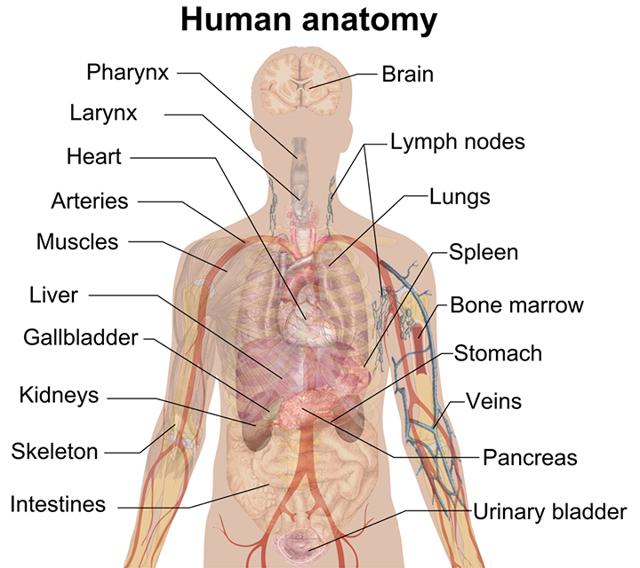

Quick Body Test
Where does it hurt?
Disclaimer: For reference only.
Inform your doctor about the result.
| Click here for mobile version. |
Click on the body part to proceed.

Head
| Common Symptoms |
|---|
Tension HeadachesA dull, aching sensation or a feeling of a tight band around the forehead. |
MigrainesIntense pulsing or throbbing pain, usually on one side of the head. |
Cluster HeadachesRare, extremely severe, and recurring headaches causing intense burning or piercing pain, usually behind one eye. |
VertigoA sensation that the room is spinning or a general feeling of lightheadedness. |
Visual DisturbancesBlurred vision, seeing "floaters," or temporary loss of vision. |
TinnitusRinging or buzzing in the ears. |
Neck
| Common Symptoms |
|---|
Axial Neck PainDull, constant ache or a "stiff neck" that limits rotation. |
RadiculopathySharp, electric-shock sensations, tingling, or "pins and needles." |
Cervicogenic HeadacheA steady, non-throbbing ache that usually affects one side of the head. |
Myofascial PainDeep aching and "knots" or trigger points that are tender to the touch. |
Mouth
| Common Symptoms |
|---|
Tooth SensitivityA sudden, "zinging" pain triggered by ice cream, hot tea, or even cold air in the winter. |
Cavities (Caries)A persistent "shadow" of pain that worsens when chewing or when sugar touches the tooth. |
Pulpitis (Infection)A heavy, rhythmic pulsing that often keeps you awake at night and feels like it's "in the bone." |
Gum DiseaseA dull, sore feeling in the gums rather than the tooth itself; often accompanied by bleeding while brushing. |
Shoulder
| Common Symptoms |
|---|
Rotator Cuff TendonitisA deep ache in the top or outer shoulder that "catches" or pinches when you reach overhead or behind your back. |
Frozen Shoulder (Adhesive Capsulitis)A gradual loss of movement. It feels like the joint is "stuck," and trying to force it results in a dull, global pain |
Shoulder BursitisIntense, sharp pain when moving the arm. The area may feel warm or look slightly swollen. |
Dislocation / InstabilityA feeling that the arm is "loose" or about to pop out of the socket, often accompanied by a sudden, sickening "clunk." |
OsteoarthritisA "creaky" sensation (crepitus) like sand in the joint, usually worse in the morning and better once the joint warms up. |
Arm
| Common Symptoms |
|---|
Tennis/Golfer’s ElbowA localized, burning pain on the outside (Tennis) or inside (Golfer’s) of the elbow that worsens when gripping or lifting a cup. |
Carpal Tunnel Syndrome"Pins and needles" that start at the wrist and move into the thumb and first two fingers, often feeling worse at night. |
Brachial PlexopathyA sudden, "stinging" or electric shock sensation that shoots down the entire length of the arm. |
Bicep TendonitisA deep, throbbing ache in the front of the upper arm that makes it difficult to pull or lift objects. |
Cubital Tunnel SyndromeNumbness and tingling specifically in the ring and pinky fingers, often caused by leaning on the elbow. |
Chest
| Common Symptoms |
|---|
Angina (Heart-related)A feeling of a "heavy weight" or an elephant sitting on the chest; often radiates to the jaw or left arm. |
Acid Reflux (GERD)A sharp, burning sensation behind the breastbone that often moves upward toward the throat. |
CostochondritisInflammation of the cartilage connecting the ribs. It feels sharp and gets worse when you press on the chest wall. |
Pleurisy (Lung-related)A "knife-like" pain that occurs specifically when taking a deep breath, coughing, or sneezing. |
Anxiety / Panic AttackA sudden, intense tightness often accompanied by a racing heart and a feeling of being unable to get enough air. |
Tummy
| Common Symptoms |
|---|
Gas / BloatingA feeling of being "stretched" or swollen, often accompanied by sharp, shifting pains that improve after passing gas. |
Stomach Flu (Gastritis)A sour or "burning" ache in the upper tummy, often worsened by hunger or spicy food. |
IBS (Irritable Bowel)Intermittent cramping in the lower abdomen that is often relieved by a bowel movement. |
GallstonesA severe, "boring" pain in the upper right side that may radiate to the back or right shoulder blade. |
AppendicitisStarts as a dull ache near the navel and shifts to a sharp, constant pain in the lower right side. |
ABCD Clinic9 Hoi Ting Rd, Yau Ma Tei, Kowloon Tel: 3746 0923 |
||||
|